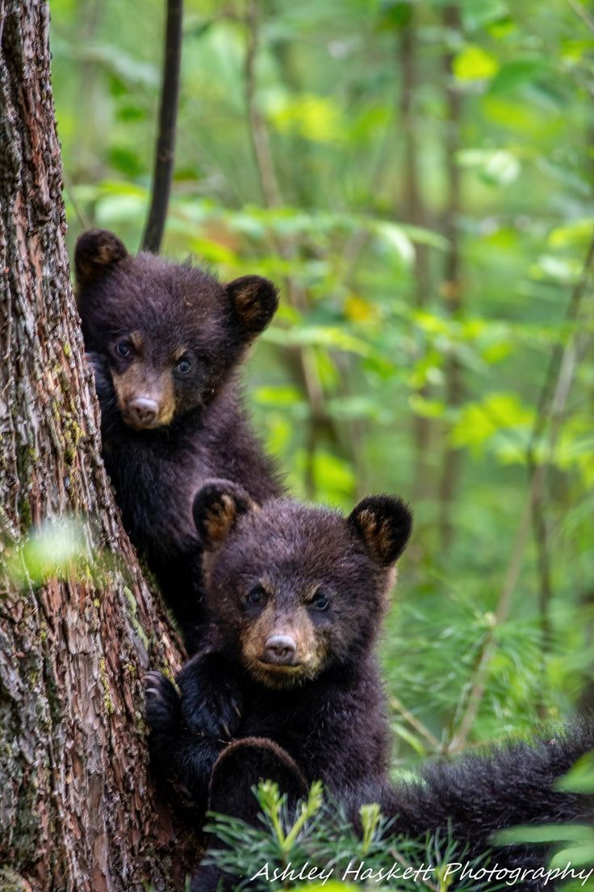
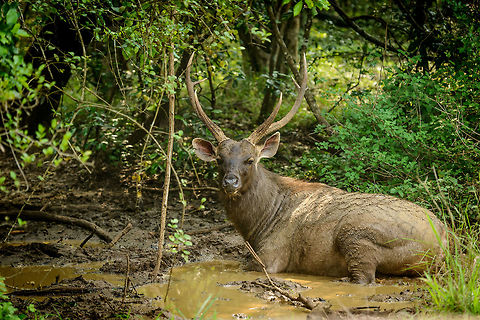

DIFFERENT WILDLIFE LOCATION
Sinharaja Forest Reserve
Sinaharja forest reserve is a biodiversity spot in srilanka. It is one of the most priceless gems in Sri Lanka, a lush gem in the island's crown.
Natural beauty and biodiversity: This old jungle, which is brimming with life, is a UNESCO World Heritage Site. More than 60% of the trees are native to the area, and there are breathtaking waterfalls, colourful birds, elegant elephants, and entertaining monkeys among the diverse array of species.
Adventure and discovery: A number of trekking paths meander through the verdant jungle, providing chances to fully take in the sights and sounds of the rainforest. In addition, there are opportunities for wildlife observation, birdwatching, and even a cool waterfall swim.
Cultural significance: Legends and folklore are deeply ingrained in Sinharaja's history, as the region has long been held in high regard by the populace. Gaining knowledge of its cultural significance might help you appreciate this special area on a deeper level.
Minneriya National Park
Minneriya National Park is a UNESCO World Heritage Site located in the North Central Province of Sri Lanka. The park's yearly elephant gathering, which happens from May to September during the dry season, is its most well-known event. Hundreds of elephants congregate on the park's grasslands during this time to seek water and food. One of the most visited tourist destinations in Sri Lanka, the gathering is a truly amazing sight. In addition the Park offers various other events and activities which includes safaris, birdwatching and hiking.
Animal Spotlight
Animal |
Interesting Fact |
Image |
|---|---|---|
| SlothBear (Melursus ursinus inornatus) | The Sri-Lankan Sloth bear is found mainly in lowland dry forests in the island itself. It is an omnivorous animal, which eats nuts, berries and meat as well. It's main food is insects, if not the sloth bears arely kill animals. It is a highly threatened animal because the sloth bears depends on the natural forests unlike the other animals. |  |
| Sri Lankan Sambar Deer(Rusa unicolor) | The Sri-Lankan sambar deer found mainly in lowland dry forests and mountain forests represents Rusa genus, containing a large antlers both in size and in body proportions. Sambar deers are the most common large animals mostly found in Hortan National park. These deers look in a appearance where their hair falls and the skin shed off during the rut whicg occurs in NOvember to December. |  |
| Sri Lankan Elephant (Elephas maximus maximus) | The Sri-Lankan Elephant(elephas maximus maximus) are found in national parks such as Udawalawe, Yala, Lunugamevehera, Wlpattu and Minneriya. They have the highest body point on the head compared to others, with a finger-like process in the tip of their trunk. It is also considered as an endangered animal by IUCN as the population has declined by 50%. |  |
|
© 2024 Wildlife Encounters. All rights reserved. |
||